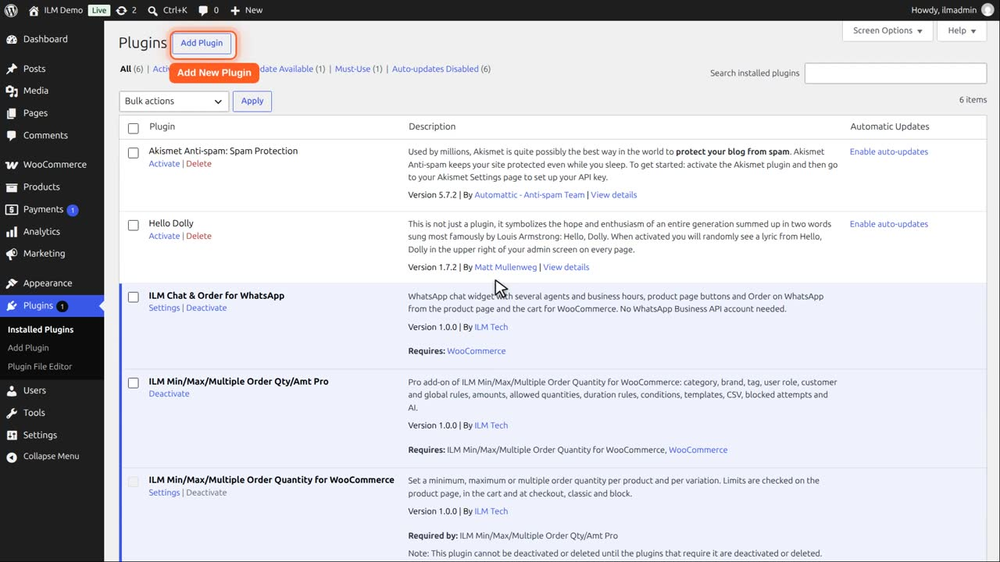
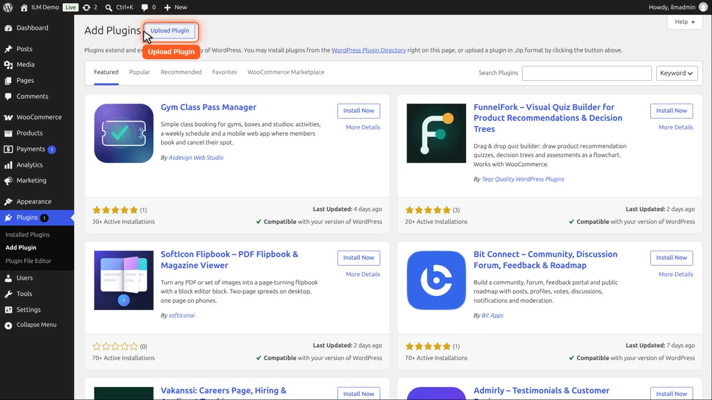
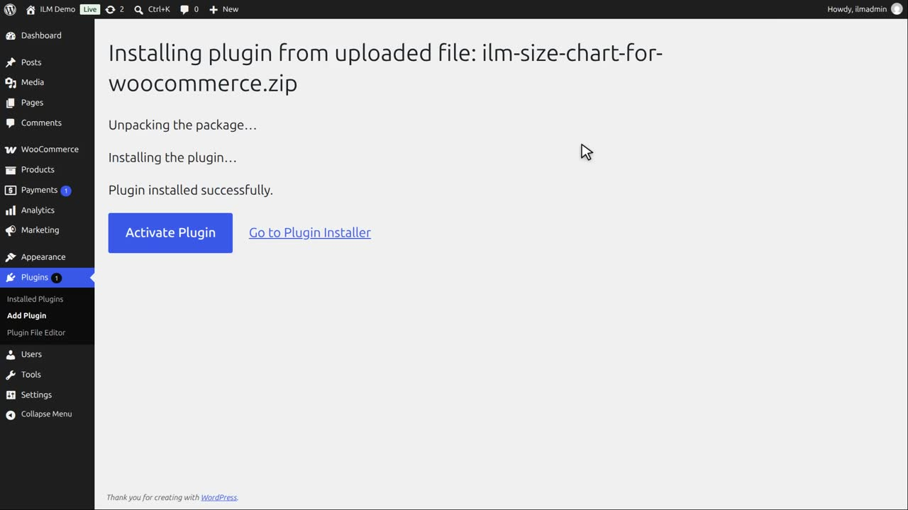
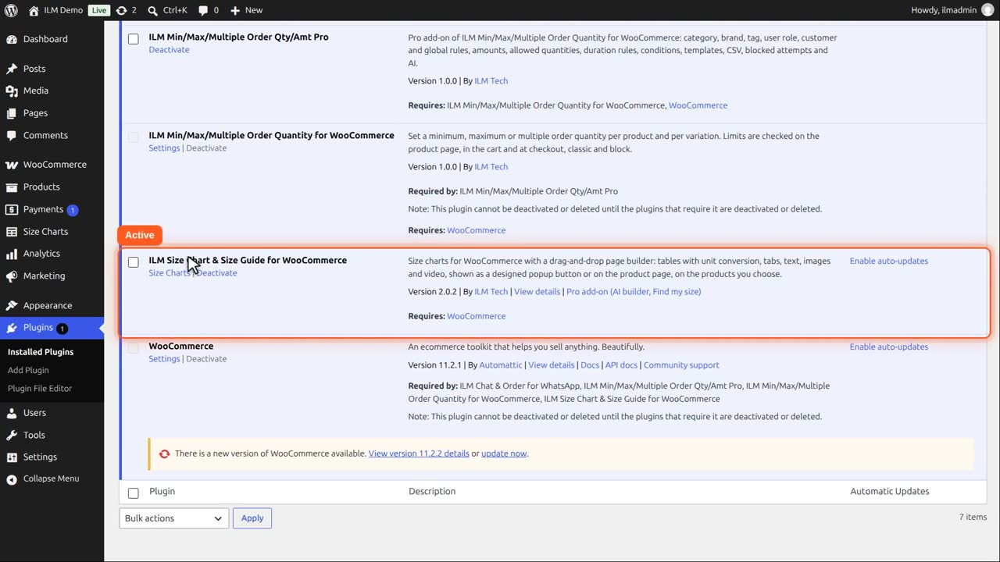

The free plugin is in the WordPress plugin directory. In your WordPress admin, go to Plugins > Add New Plugin, search for ILM Size Chart, click Install Now and then Activate. You can also install it from its zip file with Upload Plugin, as the video shows. WooCommerce must be installed and active. After activation a Size Charts menu appears in the admin menu.
Bought the Pro add-on? See Installation and licence in the Pro guide.
Upload the new zip the same way and choose Replace current with uploaded. Your size charts and settings are kept.
In WordPress admin, open Plugins. Click Add New Plugin.

The free plugin is in the WordPress plugin directory: search for ILM Size Chart and click Install Now. Here we install it from its zip file with Upload Plugin.

Choose the zip file and click Install Now. WordPress uploads it and says: plugin installed successfully.

Click Activate Plugin. ILM Size Chart is active, and the Size Charts menu is added on the left.
